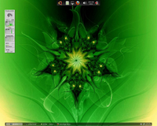

Sonstige Fenstermanager
Archivierte Anleitung
Dieser Artikel wurde archiviert, da er - oder Teile daraus - nur noch unter einer älteren Ubuntu-Version nutzbar ist. Diese Anleitung wird vom Wiki-Team weder auf Richtigkeit überprüft noch anderweitig gepflegt. Zusätzlich wurde der Artikel für weitere Änderungen gesperrt.
Sammlung von Screenshots - weitere Desktops bzw. Fenstermanager
Weitere Bildergalerien: Ubuntu, Kubuntu, Xubuntu und Lubuntu
| Sonstige Fenstermanager | ||||
| Screenshot | Informationen | |||
| Version: | Ubuntu 12.04 | |||
| Thema: | Zukitwo-Dark  (verändert) (verändert) | |||
| Icons: | Elementary | |||
| Wallpaper: | Only U | |||
| Anwendungen: | Openbox (Fenstermanager) mit Rootmenü, tint2 (Panel) und Conky Symbole links oben sind minimierte Programme, keine Programmstarter. | |||
| Anleitung: | Eigene Desktopumgebung, Openbox/Pipemenü | |||
|  | Version: | Ubuntu 10.04 | ||
| Thema: | shiki-colors | |||
| Icons: | gnome-colors | |||
| Wallpaper: | divbyzero/de  | |||
| Anwendungen: | Fluxbox (Fenstermanager), GKrellM | |||
| Anleitung: | unteres Panel: tint2, oberes Panel: ADesk Bar | |||
| Version: | Ubuntu 9.10 | |||
| Thema: | Neue Welle | |||
| Icons: | Human | |||
| Wallpaper: | - | |||
| Anwendungen: | Awesome (Fenstermanager) , GNOME, Firefox, Nautilus, Pidgin | |||
| Anleitung: | Awesome | |||
| Version: | Ubuntu 9.04 | |||
| Thema: | unbekannt | |||
| Icons: | unbekannt | |||
| Wallpaper: | - | |||
| Anwendungen: | Ratpoison (Fenstermanager), Firefox mit Vimperator, moc, Pidgin | |||
| Anleitung: | Ratpoison | |||
| Version: | Ubuntu 8.10 | |||
| Thema: | GTK: Human, Metisse: la Ora orange | |||
| Icons: | GNOME | |||
| Wallpaper: | Standard-Intrepid-Wallpaper | |||
| Anwendungen: | Archiv/Metisse (Fenstermanager) , GNOME, Firefox, GNOME-Terminal, Eye of GNOME | |||
| Anleitung: | Archiv/Metisse | |||
| Version: | Ubuntu 8.10 | |||
| Thema: | Dust Sand, Ion3-Thema: look_dusksand.lua | |||
| Icons: | Human | |||
| Wallpaper: | - | |||
| Anwendungen: | Ion3 (Fenstermanager) , GNOME, Firefox, Nautilus, Tilda | |||
| Anleitung: | Ion3 mit GNOME verwenden | |||
| Version: | Ubuntu 8.04 | |||
| Thema: | fluxbox-Thema: Dyne, GTK-Thema: Dyne, audacious-Thema: MinimalisticBlack | |||
| Icons: | unbekannt | |||
| Wallpaper: | Aurora-Colors | |||
| Anwendungen: | Fluxbox, Audacious, gnome-terminal, Conky, wbar | |||
| Anleitung: | - | |||
| Version: | Ubuntu 8.04 | |||
| Thema: | fluxbox-Thema: Elfin2 (angepasst), GTK-Thema: Elfin2, audacious-Thema: Elfin2 (angepasst) | |||
| Icons: | unbekannt | |||
| Wallpaper: | Onero | |||
| Anwendungen: | GNOME, Fluxbox, Audacious, GPicview, RoxTerm, Nautilus | |||
| Anleitung: | ||||
| << zurück |
- Erstellt mit Inyoka
-
 2004 – 2017 ubuntuusers.de • Einige Rechte vorbehalten
2004 – 2017 ubuntuusers.de • Einige Rechte vorbehalten
Lizenz • Kontakt • Datenschutz • Impressum • Serverstatus -
Serverhousing gespendet von